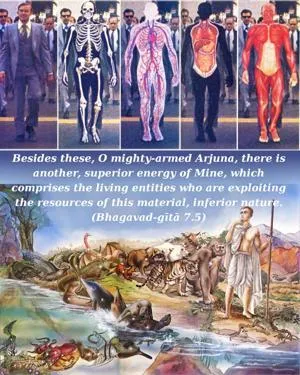
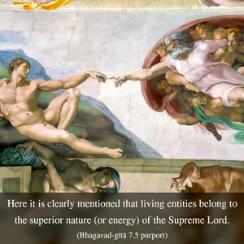
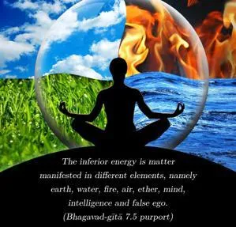

Besides these, O mighty-armed Arjuna, there is another, superior energy of Mine, which comprises the living entities who are exploiting the resources of this material, inferior nature.



Here it is clearly mentioned that living entities belong to the superior nature (or energy) of the Supreme Lord. The inferior energy is matter manifested in different elements, namely earth, water, fire, air, ether, mind, intelligence and false ego. Both forms of material nature, namely gross (earth, etc.) and subtle (mind, etc.), are products of the inferior energy. The living entities, who are exploiting these inferior energies for different purposes, are the superior energy of the Supreme Lord, and it is due to this energy that the entire material world functions. The cosmic manifestation has no power to act unless it is moved by the superior energy, the living entity. Energies are always controlled by the energetic, and therefore the living entities are always controlled by the Lord – they have no independent existence. They are never equally powerful, as unintelligent men think. The distinction between the living entities and the Lord is described in Śrīmad-Bhāgavatam (10.87.30) as follows:
aparimitā dhruvās tanu-bhṛto yadi sarva-gatās
tarhi na śāsyateti niyamo dhruva netarathā
ajani ca yan-mayaṁ tad avimucya niyantṛ bhavet
samam anujānatāṁ yad amataṁ mata-duṣṭatayā
“O Supreme Eternal! If the embodied living entities were eternal and all-pervading like You, then they would not be under Your control. But if the living entities are accepted as minute energies of Your Lordship, then they are at once subject to Your supreme control. Therefore real liberation entails surrender by the living entities to Your control, and that surrender will make them happy. In that constitutional position only can they be controllers. Therefore, men with limited knowledge who advocate the monistic theory that God and the living entities are equal in all respects are actually guided by a faulty and polluted opinion.”
The Supreme Lord, Kṛṣṇa, is the only controller, and all living entities are controlled by Him. These living entities are His superior energy because the quality of their existence is one and the same with the Supreme, but they are never equal to the Lord in quantity of power. While exploiting the gross and subtle inferior energy (matter), the superior energy (the living entity) forgets his real spiritual mind and intelligence. This forgetfulness is due to the influence of matter upon the living entity. But when the living entity becomes free from the influence of the illusory material energy, he attains the stage called mukti, or liberation. The false ego, under the influence of material illusion, thinks, “I am matter, and material acquisitions are mine.” His actual position is realized when he is liberated from all material ideas, including the conception of his becoming one in all respects with God. Therefore one may conclude that the Gītā confirms the living entity to be only one of the multi-energies of Kṛṣṇa; and when this energy is freed from material contamination, it becomes fully Kṛṣṇa conscious, or liberated.